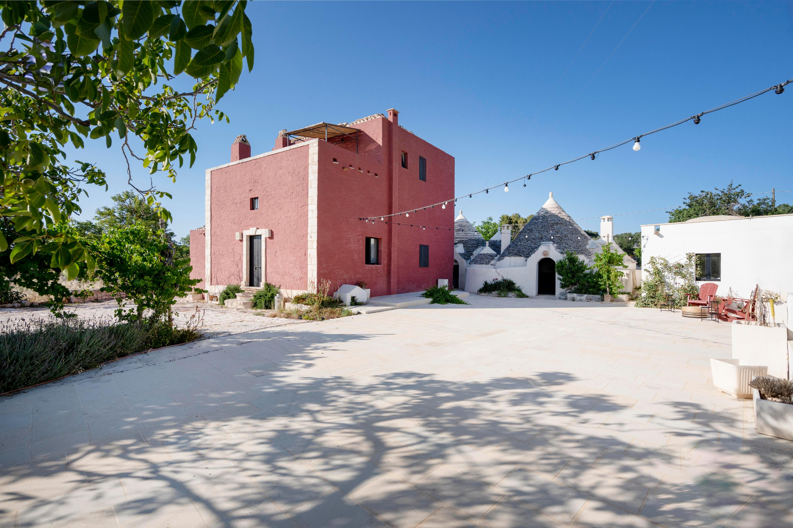

€950.000
Valle d'Itria (Ceglie–Ostuni–Cisternino), Puglia
A small rural village already restored: star-vault masseria, philological 17th-century trullo, independent lamia and a former dovecote studio around a stone courtyard. Built private pool (above-ground, landscape-integrated). Operational, not a rustico.
Opened 29 Aug 2026. Schema Offer €950000. 8 bed / 8 bath / ~365 m² / ~12,989 m². Features include Swimming pool. Energy G (old fabric). Page: conservative restoration, independent units, professional kitchen, already a ‘ready-made lifestyle system’. Not the board’s ceglie-panoramic W-046K74.